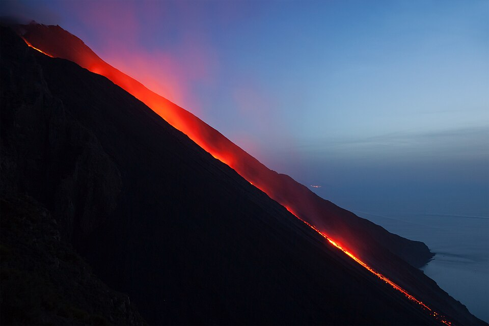

←
←
IL FARO DEL MEDITERRANEO: DA MIGLIAIA DI ANNI LA SUA ATTIVITÀ INCESSANTE ILLUMINA IL MARE DI NOTTE, RENDENDOLO UNA DELLE MERAVIGLIE GEOLOGICHE PIÙ STRAORDINARIE DEL PIANETA.
Stromboli è un vulcano situato nelle Isole Eolie ed è noto per la sua attività costante. Le sue eruzioni sono frequenti e di bassa intensità, con esplosioni regolari che lanciano lapilli e cenere. Questo tipo di attività prende il nome di stromboliane. Il vulcano è attivo quasi ininterrottamente da migliaia di anni. Grazie alla sua attività visibile anche di notte, è chiamato il faro del Mediterraneo. È una meta molto visitata.
| Stato | 🔴 Attivo |
| Regione | Sicilia |
| Paese | Italia |
| Eruzioni storiche | Continua |
| Parco naturale | Sì |
